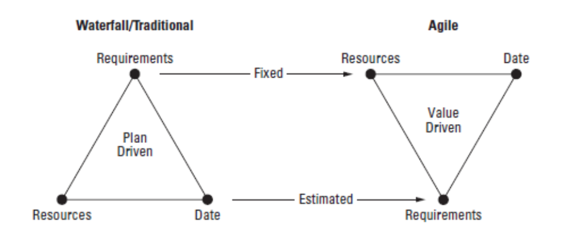
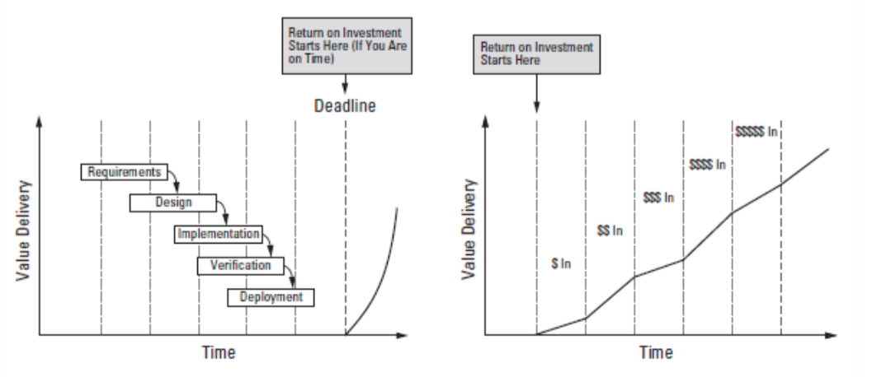
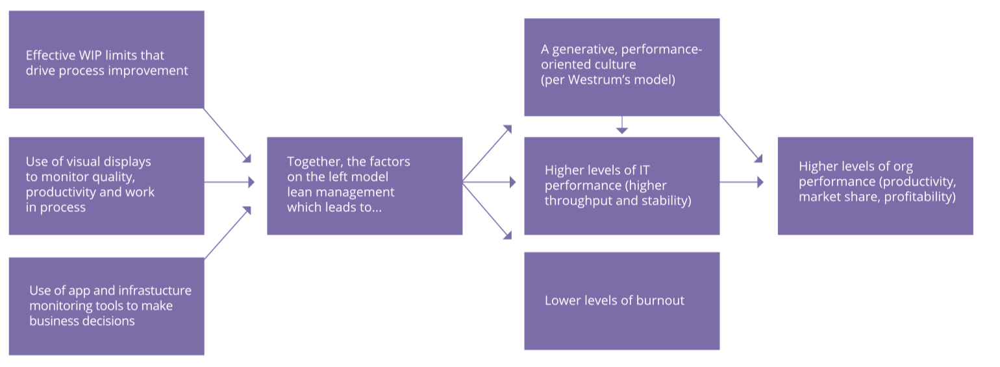

Thinking in the practices of Automated Workflow we think in three complentaries practices:
Continuous Integration
Continuous Delivery
Continuous Deployment
Releated Movements
Agile
Lean
DevOps
Agile
Individuals and interactions over processes and tools Working software over comprehensive documentation Customer collaboration over contract negotiation Responding to change over following a plan
Agile Manifesto
Our highest priority is to satisfy the customer
through early and continuous delivery
of valuable software.
Agile Manifesto First Principle - Jez Humble Continiuous Delivery Inspiration

Agile vs Traditional

Extreme Programming
Extreme Programming practices are already know practices that the moviment consider that worked well in the pass, that was important to the success of existing projects. The key point of XP is bring these practices as far it can go, to the edge of Extreme as we possible can, and doing this in a rigorous and intensive manner.
Evaluating well-designed and executed experiments that were designed to improve a key metric, only about 1/3 were successful at improving the key metric!
"Online Experimentation at Microsoft | Kohavi et al | http://stanford.io/130uW6X"
2/3 of software we delivery have 0 or negative impact on our customers or business. We can be playing guitar for 2/3 of our work week and delivery the same value for our customers if we have a chance to know
Impacts
opportunity cost - what of good we could be doing
costs of maintaining that feature in production
costs in add complex that slow down the work to add new features
Based on speach - Jez Humble - Continuos Delivery Workshop

Path diagram showing relationships between lean management practices, IT performance, culture burnout, and organization performance
Puppet Labs - DevOps Report 2015
DevOps
a cross-disciplinary community of practice dedicated to the study of building, evolving and operating rapidly-changing resilient systems at scale.”
Jez Humble
DevOps is the practice of operations and development engineers participating together in the entire service lifecycle, from design through the development process to production support.
DevOps is a set of practices to reduce the time between committing a change to a system and the change being placed into normal productin, while ensuirng high quality
Liming Zhu; Len Bass; Ingo Weber - DevOps: A Software Architect's Perspective
... devops is a cultural movement that seeks to improve both software development and the professional lives of the people involved in the field ...
Jennifer Davis; Katherine Daniels - Effective DevOps
DevOps (a portmanteau of development and operations) is a sotware development method that stresses communication, collaboration and integration between software developers and information technology(IT) operations professional.
Gartner Research 2012 - Big Data Drives Rapid Changes in infrastructure and $232 Billion in IT Spending Through 2016
Successful DevOps is mutual respect between development and operations. You deliver quality code and I'll deliver a quality platform to run that code. We can have differences of option about how to do it, but at the end of the day, we are together going to deliver software that performs as advertised and meets our customer's needs.
Mike Surma - Rackpsace Interview
Operation is not it’s own silo, but a liaison between operations and developers
Ops been at inceptions, showcases and retros
As CD requires machines to be provisioning programatically we will drive a much earlier awareness of operations concerns
Once in a while the idea of Dev works in ops can carry pagers
The goal is developers create more deployable software
Based in Neal Ford
IT Performance
Last year, we were delighted to discover that we could actually quantitatively define IT performance. We discovered that high- performing IT organizations are more agile and reliable: They deploy code 30 times more frequently than their lower-performing peers, with 50 percent fewer failures. This year, we’ve learned that IT performance has real impact on the business: Companies with high IT performance are twice as likely to exceed their pro tability, market
Puppet Labs - DevOps Report 2014
Pupptet Labs, 2014 DevOps Report made some observations based on quantitative evidence of their researchs that IT performance and DevOps culture and practices contribute to organizational performance.
IT Performance is measured in terms of throughput(deployment frequency, lead time for changes) and stability(mean time to recover). So to increase organizational performance through IT performance you need to invest in practices that increase throughput and stability metrics.